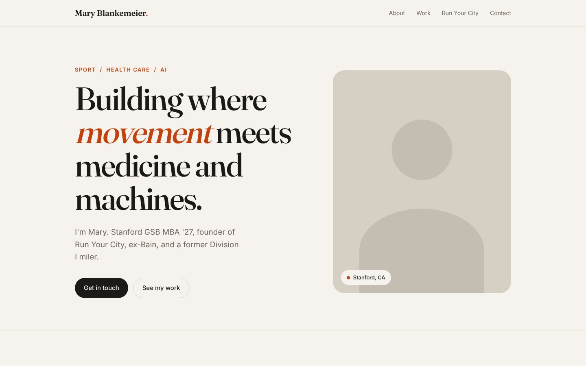
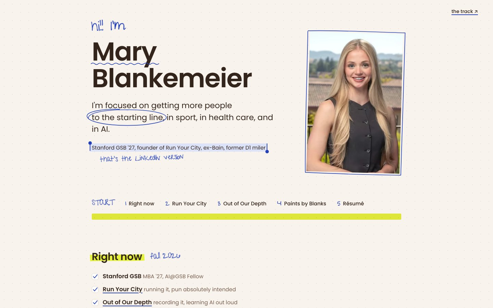
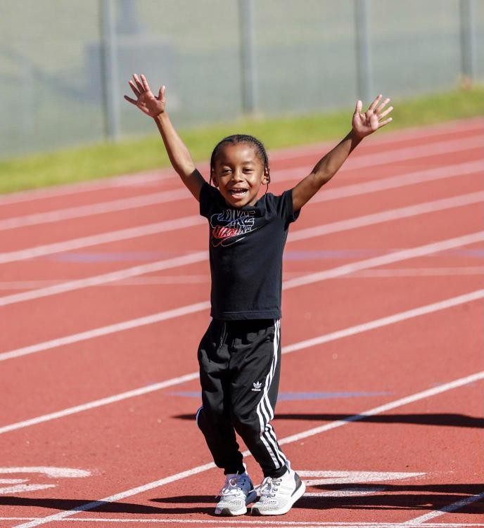
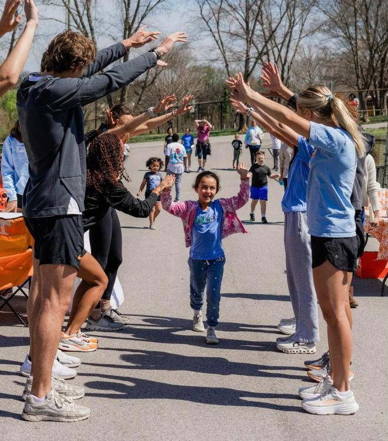
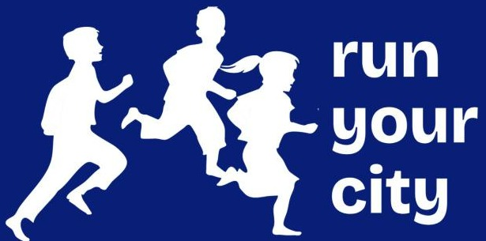
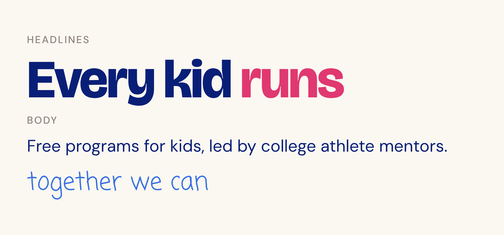
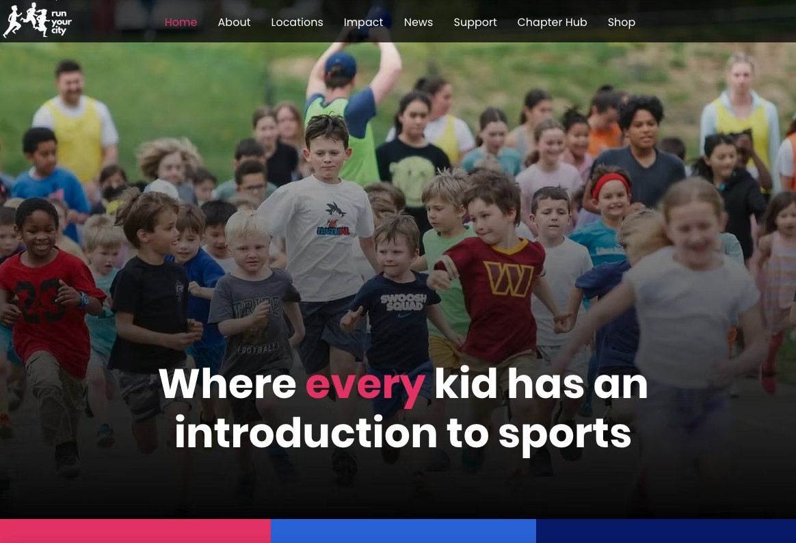
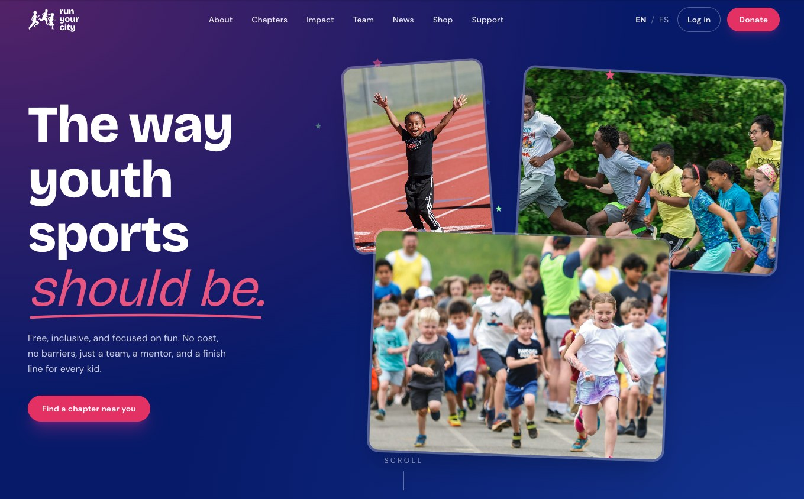
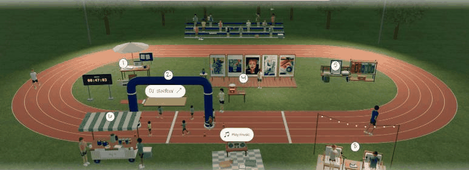

grab a seat & a wrap, we start at 6:20
1 Why
2 Your voice
3 Your design
4 Your site
Make your AI look & sound like you
AI@GSB WORKSHOP 3: AI PERSONALIZATION
Make yourself one in a million,
not one of a million.
GLENN KRAMON, WINNING WRITING
1 Why
2 Your voice
3 Your design
4 Your site
MY BIO, IF I LET AI WRITE IT
"Results-driven leader passionate about leveraging AI to transform health care"
me: one more ex-consultant at the GSB, trying not to sound like one
hi!! I'm
Mary Blankemeier
NOW
AI@GSB
Run Your City
Early-Stage Healthcare
BEFORE
Clinton Health Access Initiative
Bain & Company
University of Virginia
1 Why
2 Your voice
3 Your design
4 Your site
TODAY'S GOAL
Your AI feels like you
META GOAL
Have fun learning AI
1 Why
2 Your voice
3 Your design
4 Your site
The plan
15 MIN
Me
1 Why
2 Your voice
3 Your design
4 Your site
1 Why
2 Your voice
3 Your design
4 Your site
Left alone, AI builds the same site for everyone
Same prompt both times: "Make me a personal website"
NO SKILLS

blah. yuck. throw up.
WITH MY TWO SKILLS

+ voice + design
1 Why
2 Your voice
3 Your design
4 Your site
Left alone, AI drifts to the average
Hintze et al., 2025
Why? Each round drops what's unusual and fills the gap with what's most common. 100 rounds = visual elevator music
1 Why
2 Your voice
3 Your design
4 Your site
People trust work less when they think AI made it
16 to 20%
lower trust once people learn AI was used
SCHILKE & REIMANN 2025 / PROFESSORS, INVESTMENT FUNDS, DESIGNERS
1 Why
2 Your voice
3 Your design
4 Your site
Teach it once, sound & look like you everywhere
+
TONIGHT'S PROOF
your website
Cover letters
Your résumé
LinkedIn
Class papers
Texts & WhatsApp
Slide decks
Event pages
One-pagers
1 Why
2 Your voice
3 Your design
4 Your site
A skill is a recipe AI reads before it cooks
VOICE: SOUNDS LIKE ME
SKILL.md
my-writing-style
Anything I send as me
emails
Slack
texts
cover letters
LinkedIn
DESIGN: ONE PER BRAND
Run Your City
flyers, decks, the website
AI@GSB
events, workshop decks
Out of Our Depth
the podcast
HELPERS
winning-writing
Glenn Kramon's class rules
humanizer
Strips out AI-sounding words
interviewer
Asks me questions first
class prep
What to listen to each day
1 Why
2 Your voice
3 Your design
4 Your site
Every skill gets good the same way
You'll run this loop 3 times tonight: on your voice, your design and your site
ON MARY'S SITE
"Give me 3 bolder directions"
start is confusing
thin line? cut it
design SKILL.md
Vibe: blue pen, yellow-green highlighter
Never: tape on photos
+ Keep the start line simple
+ Never: a second line over the highlighter
1 Why
2 Your voice
3 Your design
4 Your site
Samples + tone + nevers = your voice
How you write
about you
An email you sent
A post you wrote
A text to a friend
or ask Claude: "hey bestie, give me examples of how I write"
+
Who's reading
about your audience
Polished structured, concise
Warm direct, humble
Playful candid, fun
E.g., you're not using insanely big words when you're trying to empower kids
+
Ish that makes you cringe
about you + your audience
passionate about
proven track record
em dashes
· dots (the new em dash)
1 Why
2 Your voice
3 Your design
4 Your site
Under the hood... let's get technical
1 THE RECIPE BOX
It reads card titles first
Just the name + description, until your ask matches.
2 FEW-SHOT LEARNING
Let it taste your cooking
3 real examples beat 30 rules.
3 CONTEXT
The chat is the counter
Too crowded, it drifts. Start fresh.
1 Why
2 Your voice
3 Your design
4 Your site
Assets + vibe + nevers = your look
Example: Run Your City
ASSETS
What goes on the page



real kids, always. the logo, never redrawn
VIBE
How it should feel

Feel
warm
joyful
full of energy
1 Why
2 Your voice
3 Your design
4 Your site
Run Your City, one year apart
Same brand. What changed: a few lines in the design skill.
LAST YEAR

Kids behind a dark filter.
TODAY

Kids up front, bright and real.
build, wince, write it down, repeat
1 Why
2 Your voice
3 Your design
4 Your site
Not to make it about me, but here's mine
mary-blankemeier.vercel.app
ASSETS
My headshot, resume & paintings
VIBE
Blue pen + yellow-green highlighter, pulled from my headshot
NEVERS
No emojis, tape on photos, big-number stats, dots, excessive spaces

/explore: the 3D version, live
1 Why
2 Your voice
3 Your design
4 Your site
Ask for three. Name what's off.
All you hand over: your two skills and one line. Real examples from building my site.
voice skill
samples, tone, nevers
+
design skill
assets, vibe, nevers
+
THE PROMPT
"Make me a personal website so people feel like they know me."
THEN THE LOOP, ON MY SITE
1 ASK FOR 3, PICK ONE
a letter
a running log
marked-up ✓
WHY I PICKED IT
"It feels the most like me. I love the handwriting."
→
2 NAME WHAT'S OFF
→
• 4,665 kids reached
• 660 volunteers
"big-number stats feel corporate"
"tape on photos is tacky"
→
3 UPDATE THE SKILL
design SKILL.md
+ Never: big-number stats
+ Never: tape on photos
so they never come back.
then go again.
1 Why
2 Your voice
3 Your design
4 Your site
Put it online: laptop to link
YOUR LAPTOP
localhost
Only you can open it
THE CLOUD (A HOST)
Live web link
Anyone can open
Vercel (recommended)
GitHub Pages
TONIGHT, 4 CLICKS
1
Ask Claude for index.html
→
→
→
1 Why
2 Your voice
3 Your design
4 Your site
Six habits that save you an hour
1 New chat when it gets messy
Your skills come with you.
+ New chat
chat #47, 200 messages
2 Talk, don't type
My fave: Wispr Flow (free plan).
3 Tell it who's reading
Say it before it writes.
recruiter
10-year-old
your mom
4 Show, don't describe
Paste a screenshot. Skip the adjectives.
5 Fix the skill, not the page
Say "add this to my skill."
design / SKILL.md
+ Never: tape on photos
6 Push it to think, before acting
Ask for 3 questions + a plan first.
Q1 who is it for?
Q2
Q3
plan ✓
1 Why
2 Your voice
3 Your design
4 Your site
Your turn
tutorial link is in your email (if you RSVP'd)
STUCK? DEBUG IN THIS ORDER
1
Ask AI in the chat you're building in
2
Hit "Stuck?" in the tutorial
4
Raise your hand. We'll come running